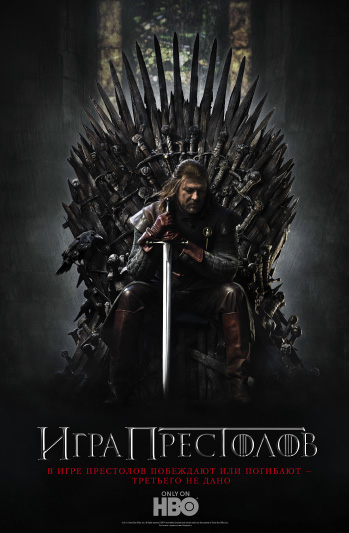

Это сайт про телесериал Игра Престолов
Это ссылка на статью википедии о сериале

«Игра́ престо́лов» (англ. Game of Thrones) —
американский фэнтезийный драматический телесериал,
созданный Дэвидом Бениоффом и Д. Б. Уайссом для кабельного телеканала HBO.
Основан на цикле романов «Песнь льда и огня» Джорджа Р. Р. Мартина.